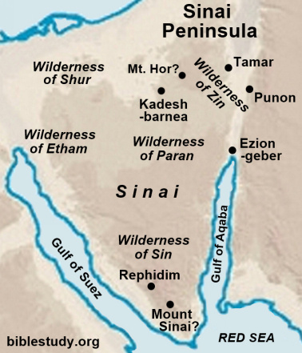
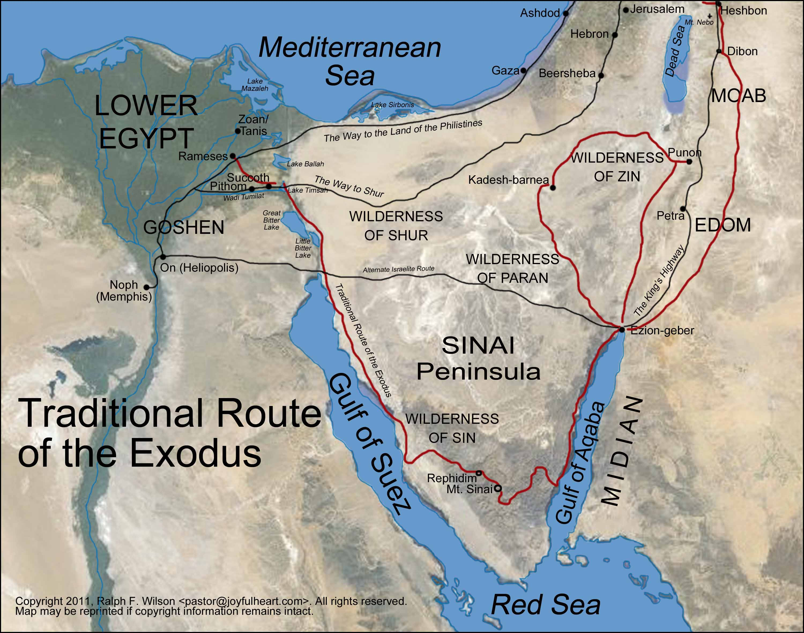

Êxodo 19-24
Período: ~1446 a.C. (Mês 3 - Revelação no Sinai)
O Monte Sinai (também chamado Horebe) é o local mais sagrado do Êxodo, onde Deus se revelou a Moisés e entregou a Lei. A localização exata é debatida: a tradição cristã aponta para o Jabal Musa (Monte de Moisés) no sul da Península do Sinai, mas teorias alternativas sugerem Jabal al-Lawz na Arábia Saudita.
A Teofania: A manifestação de Deus no Sinai foi acompanhada de trovões, relâmpagos, nuvem espessa, som de trombeta e fogo (Êxodo 19:16-18). Esta teofania (aparição divina) estabeleceu a santidade de Deus e a seriedade da aliança. Os Dez Mandamentos formam o núcleo moral da Lei, seguidos pelo Livro da Aliança (Êxodo 20:22-23:33) com leis civis e religiosas detalhadas.
A Península do Sinai e as teorias sobre a localização do Monte Horebe/Sinai.

Fonte: Bible Study - Sinai Peninsula Map
Mapa completo da rota do Êxodo desde o Egito até o Monte Sinai, incluindo todas as paradas mencionadas na Bíblia.

Fonte: Moses Bible Study - Complete Exodus Route
Êxodo 19:4-6
Vocês viram o que eu fiz aos egípcios e como vos trouxe como sobre as asas duma águia. Por isso, se me obedecerem e forem fiéis à aliança que fiz convosco, tornar-se-ão como a minha propriedade preciosa, obtida de entre todas as nações da Terra, ainda que a Terra toda afinal seja minha. E serão um reino de sacerdotes de Deus, serão uma nação santa. Isto falarás aos filhos de Israel.
Êxodo 20:1-17
1 E Deus falou-lhes as seguintes palavras:
2 “Eu sou o Senhor, o teu Deus, que te libertou da escravidão do Egito.
3 Não prestes culto a outros deuses senão a mim.
4 Não faças imagens nem esculturas de ídolos: seja do que for que viva no céu, na Terra ou nos mares. 5 Não te inclines perante elas, nem lhes prestes adoração. Porque eu sou o Senhor, teu Deus. Não admito partilhar o culto com outros deuses e castigo a maldade dos que me desprezam, até à terceira e até à quarta geração. 6 Mas dispenso o meu amor sobre milhares dos que me amam e me obedecem.
7 Não faças uso do nome do Senhor, teu Deus, de uma forma irreverente. Não escaparás ao castigo se o fizeres.
8 Lembra o dia de sábado como um dia santo. 9 Durante seis dias trabalharás, e neles realizarás toda a tua obra. 10 Mas o sétimo dia é o sábado do Senhor teu Deus. Nesse dia não farás qualquer trabalho; nem os teus filhos, nem os teus servos, nem os teus animais, tão-pouco os estrangeiros que vivem contigo. 11 Porque foi também em seis dias que o Senhor fez os céus, a Terra, os mares e tudo o que neles existe, e ao sétimo dia repousou. Foi assim que o Senhor abençoou o sétimo dia e declarou que esse dia seria santo.
12 Honra o teu pai e a tua mãe, para que tenhas uma longa vida na terra que o Senhor, teu Deus, te dá.
13 Não mates.
14 Não adulteres.
15 Não roubes.
16 Não profiras uma falsa acusação contra outra pessoa.
17 Não cobices a casa do teu próximo. Não cobices a mulher do teu próximo, nem o seu servo ou a serva, o gado e os animais de carga, ou qualquer outra coisa que lhe pertença.”
Êxodo 24:7-8
7 Depois pegou no Livro da Aliança e leu-o ao povo, que respondeu: “Faremos tudo o que o Senhor disse e lhe obedeceremos.” 8 Em seguida, Moisés aspergiu o povo com o sangue que estava nas bacias dizendo: “Este sangue confirma a aliança que o Senhor fez convosco, na base de todos estes mandamentos.”
O Bloco 05 do livro de Êxodo, abrangendo os capítulos 19 a 24, representa um divisor de águas na história de Israel e na teologia bíblica. Após a dramática libertação da escravidão egípcia e a providencial jornada pelo deserto, o povo de Israel é conduzido ao Monte Sinai, um local de profunda significância teológica. É neste cenário imponente que Deus escolhe estabelecer formalmente Sua aliança com a nação recém-formada. Este período é marcado por uma série de eventos extraordinários, incluindo uma teofania majestosa e a promulgação de leis divinas que moldariam a identidade e o destino de Israel. A teofania no Monte Sinai, com suas manifestações visíveis e audíveis da presença divina, serve como o clímax da revelação de Deus a um povo inteiro, estabelecendo um precedente para a interação divina com a humanidade [1].
A essência deste bloco reside na formalização do relacionamento pactual entre Yahweh e Israel. Os Dez Mandamentos, entregues diretamente por Deus, constituem o fundamento moral e ético desta aliança, delineando os princípios que regeriam a vida individual e comunitária. Estes mandamentos não são meras proibições, mas sim diretrizes para uma vida de liberdade e bênção sob a soberania divina. Complementando os Dez Mandamentos, o Livro da Aliança (Êxodo 21-23) oferece um corpo de leis mais detalhado, abordando aspectos civis, sociais e religiosos que visavam estabelecer uma sociedade justa e equitativa, refletindo o caráter de Deus. A ratificação solene desta aliança, selada com sangue, simboliza a seriedade e a natureza vinculante do pacto, transformando Israel em uma nação consagrada a Deus, um “reino de sacerdotes e nação santa” (Êxodo 19:6) [2].
A importância teológica deste bloco é multifacetada. Ele revela a natureza de Deus como um soberano que não apenas liberta, mas também governa e se relaciona com Seu povo através de um pacto. A Lei, embora muitas vezes mal compreendida, é apresentada como um dom divino, um meio pelo qual Israel poderia conhecer a vontade de Deus e viver em comunhão com Ele. A teofania no Sinai sublinha a santidade e a transcendência de Deus, enquanto a mediação de Moisés aponta para a necessidade de um intercessor entre o Deus santo e a humanidade pecadora. Este bloco, portanto, não apenas narra eventos históricos, mas também estabelece os fundamentos para a compreensão da Lei, da graça, da adoração e do Reino de Deus, preparando o terreno para futuras revelações e, em última instância, para a vinda de Cristo [3].
O cenário histórico para os eventos de Êxodo 19-24 é o Novo Reino do Egito, um período de grande poder e influência egípcia, que se estendeu aproximadamente de 1550 a 1070 a.C. Este império, que abrangeu as 18ª, 19ª e 20ª dinastias, foi caracterizado por faraós poderosos, expansão territorial e uma rica cultura. A presença de Israel no Egito e sua subsequente libertação devem ser entendidas à luz da hegemonia egípcia na região. A datação do Êxodo é um dos debates mais intensos na erudição bíblica e arqueológica. Duas datas principais são propostas: uma data antiga por volta de 1446 a.C., durante a 18ª dinastia, e uma data tardia por volta de 1290-1250 a.C., durante a 19ª dinastia, sob faraós como Seti I ou Ramsés II. A menção de cidades-celeiro como Pitom e Ramessés (Êxodo 1:11), construídas pelos israelitas, parece favorecer a data tardia, pois essas cidades foram proeminentes durante o período raméssida. No entanto, a ausência de evidências arqueológicas diretas e inequívocas para uma migração em massa de israelitas no deserto do Sinai e a conquista de Canaã no período tradicional do Êxodo continua a ser um desafio para os estudiosos [4]. John Durham, em seu comentário sobre Êxodo, discute as complexidades da datação e a natureza da evidência, enfatizando que a narrativa bíblica tem um propósito teológico primário, que transcende a mera cronologia histórica [1].
As práticas culturais egípcias da época eram profundamente enraizadas em uma religião politeísta complexa, com um vasto panteão de deuses e deusas, rituais elaborados e uma forte crença na vida após a morte, evidenciada pelas pirâmides e túmulos ricamente decorados. A adoração de ídolos, a divinização do faraó como um deus vivo e a prática da magia eram aspectos centrais da vida egípcia. Em contraste marcante, a aliança no Sinai introduz um monoteísmo radical, com a adoração exclusiva a Yahweh e a proibição explícita de imagens esculpidas (Êxodo 20:4-5). Esta distinção não era apenas religiosa, mas também cultural, pois a identidade de Israel seria definida por sua lealdade a um único Deus invisível, em oposição às práticas sincretistas das nações vizinhas. As leis do Livro da Aliança também refletem e contrastam com os códigos legais contemporâneos do Antigo Oriente Próximo, como o Código de Hamurabi. Enquanto o Código de Hamurabi muitas vezes refletia uma estrutura social hierárquica, as leis israelitas, embora não eliminando completamente as distinções sociais, demonstravam uma preocupação notável com a justiça para os vulneráveis, como servos, viúvas, órfãos e estrangeiros, revelando uma ética social distintamente teocêntrica [2]. Douglas Stuart, em sua análise, destaca como as leis mosaicas, embora compartilhando algumas formas com outros códigos antigos, são fundamentalmente diferentes em seu espírito e propósito, enraizadas na santidade e justiça de Deus [5].
A geografia desempenha um papel crucial na narrativa do Êxodo. A rota do Êxodo, embora objeto de debate, geralmente traça um caminho do Egito, através do Mar Vermelho (ou Mar de Juncos), e pelo deserto do Sinai até o Monte Sinai. O deserto do Sinai, com sua paisagem árida e montanhosa, não era um lugar hospitaleiro, mas serviu como um cenário ideal para a revelação divina, enfatizando a dependência total de Israel de Deus para sua sobrevivência. O Monte Sinai, também conhecido como Horebe, é o epicentro da teofania e da entrega da Lei. Sua localização exata permanece incerta, com várias propostas, incluindo Jebel Musa (a tradição cristã) e Jebel al-Lawz (uma teoria mais recente) na Península do Sinai, ou até mesmo locais na Arábia. A escolha de um monte para a revelação divina é significativa, pois em muitas culturas antigas, montanhas eram consideradas lugares de encontro entre o divino e o humano. A grandiosidade e o isolamento do Sinai amplificam a magnitude do encontro de Israel com seu Deus [6].
A arqueologia relevante para o Êxodo e os eventos do Sinai é complexa e muitas vezes ambígua. A falta de evidências diretas para uma migração em massa de israelitas do Egito e sua subsequente conquista de Canaã no período tradicional do Êxodo tem levado a diferentes interpretações. Alguns arqueólogos argumentam que a ausência de evidências é devido à natureza nômade dos israelitas no deserto, enquanto outros sugerem que a narrativa do Êxodo pode ter sido uma construção teológica posterior ou que os eventos ocorreram em uma escala menor do que a descrita. No entanto, escavações em locais como Hazor, Laquis e Debir em Canaã revelam padrões de assentamento e destruição que alguns estudiosos tentam correlacionar com a narrativa bíblica da conquista. Brevard Childs, em sua abordagem canônica, argumenta que a questão da historicidade, embora importante, não deve ofuscar o significado teológico da narrativa do Êxodo, que é central para a fé de Israel [3]. A arqueologia, portanto, fornece um contexto material para a compreensão da época, mas a fé na narrativa do Êxodo permanece, em grande parte, uma questão de interpretação teológica e não de prova empírica direta [7].
Os capítulos 19 a 24 de Êxodo constituem o relato fundamental da chegada de Israel ao Monte Sinai e o estabelecimento da aliança mosaica, um evento que define a identidade e o propósito da nação. A estrutura literária deste bloco é cuidadosamente construída para enfatizar a solenidade e a importância da revelação divina. Começa com a preparação para o encontro, culmina na entrega da Lei e é selada pela ratificação da aliança. John Durham (1987) destaca a natureza dramática e teologicamente carregada desses capítulos, que servem como o ponto alto da narrativa do Êxodo [1].
O capítulo 19 serve como um prelúdio dramático para a teofania, preparando o cenário para o encontro divino. Após três meses de jornada desde o Egito, os israelitas acampam diante do Monte Sinai, um local que se tornaria sinônimo da revelação da Lei. Deus convoca Moisés ao monte e, através dele, propõe uma aliança a Israel, convidando-os a serem seu “reino de sacerdotes e nação santa” (Êxodo 19:6). Esta promessa é condicional à obediência, indicando um privilégio e uma responsabilidade únicos: Israel seria um povo mediador entre Deus e as nações, refletindo o caráter de Deus ao mundo. A resposta unânime do povo – “Faremos tudo o que o Senhor nos disse” (Êxodo 19:8) – estabelece a base para o pacto. A preparação para a teofania é rigorosa e detalhada: o povo deve se santificar, lavar suas vestes e estabelecer limites ao redor do monte, sob pena de morte. Esta exigência de santidade e a imposição de barreiras físicas sublinham a absoluta santidade de Deus e a necessidade de reverência em Sua presença. A teofania em si é descrita com uma linguagem vívida e aterrorizante, utilizando elementos naturais para transmitir a magnitude do evento: trovões, relâmpagos, uma nuvem espessa, fumaça subindo como de uma fornalha, o som crescente de uma trombeta e o monte tremendo violentamente (Êxodo 19:16-19). Esta manifestação grandiosa e temível de Deus enfatiza Sua transcendência, poder e majestade, incutindo temor no coração do povo e estabelecendo a base para a autoridade da Lei que seria entregue [1].
O capítulo 20 é o coração da aliança, apresentando os Dez Mandamentos (Êxodo 20:1-17), também conhecidos como o Decálogo. Estes mandamentos são proferidos diretamente por Deus, sem a mediação de Moisés, o que lhes confere uma autoridade singular e inquestionável. A estrutura dos mandamentos é geralmente dividida em duas tábuas: os primeiros quatro (ou cinco, dependendo da tradição) focam na relação do homem com Deus (deveres para com o Criador), e os restantes na relação do homem com o próximo (deveres para com a comunidade). A introdução, “Eu sou o Senhor, o teu Deus, que te libertou da escravidão do Egito” (Êxodo 20:2), é crucial, pois estabelece o contexto da graça redentora como o fundamento para a obediência à Lei. Não é uma lei para salvação, mas uma lei para um povo já salvo. Palavras-chave em hebraico como ’ānōḵî (אֱנֹכִי - “Eu sou”), que inicia o primeiro mandamento, ressaltam a identidade e a autoridade exclusiva de Yahweh, o Deus pessoal e pactual de Israel. A proibição de outros deuses e de imagens esculpidas (Êxodo 20:3-6) estabelece o monoteísmo radical e a exclusividade da adoração a Yahweh, contrastando fortemente com o politeísmo egípcio que Israel acabara de deixar. Os mandamentos sobre o nome de Deus, a observância do sábado, a honra aos pais, e as proibições contra assassinato, adultério, roubo, falso testemunho e cobiça, fornecem um código moral abrangente que visa promover a justiça, a ordem social e a santidade na comunidade israelita. A teologia subjacente é a de um Deus que é tanto santo quanto justo, e que espera que Seu povo reflita Seu caráter em todas as áreas da vida, estabelecendo um padrão para a vida em aliança [5]. Brevard Childs (1974) enfatiza que o Decálogo não é apenas um conjunto de regras, mas uma expressão da vontade de Deus para um relacionamento de vida com Seu povo [3]..
Os capítulos 21 a 23 contêm o Livro da Aliança (Sefer HaBrit), uma coleção de estatutos e ordenanças que expandem e aplicam os princípios gerais dos Dez Mandamentos a situações específicas da vida em Israel. Esta seção detalha a aplicação prática da Lei na vida cotidiana do povo. As leis abordam uma ampla gama de questões, incluindo direitos de propriedade, justiça para os vulneráveis (servos, viúvas, órfãos, estrangeiros), leis sobre danos pessoais, responsabilidade civil e práticas religiosas. A estrutura dessas leis é predominantemente casuística, utilizando a fórmula “Se... então...” (por exemplo, Êxodo 21:2, 7, 18, 22, 28, 33), o que era comum em códigos legais do Antigo Oriente Próximo. No entanto, o Livro da Aliança se distingue por sua ênfase na equidade e na proteção dos marginalizados, como servos, viúvas, órfãos e estrangeiros (Êxodo 22:21-24; 23:9). Isso reflete a preocupação de Deus com a justiça social e a compaixão, enraizada em Sua própria experiência de libertar Israel da opressão. Douglas Stuart (2006) observa que a preocupação com os direitos dos mais fracos é uma característica distintiva da legislação mosaica, que a eleva acima de outros códigos legais antigos [2]. As leis sobre os festivais anuais (Êxodo 23:14-19) também são incluídas, integrando a vida religiosa e cívica, e lembrando o povo de sua dependência de Deus e de Sua provisão. A teologia aqui revela um Deus que não está apenas preocupado com a adoração ritualística, mas com a totalidade da vida de Seu povo, exigindo santidade e justiça em todas as suas interações e relações sociais [2].
A graça de Deus permeia todo o Bloco 05 de Êxodo, mesmo em meio à imponente revelação da Lei. É fundamental compreender que a aliança no Sinai não é um meio para a salvação, mas uma resposta à salvação já concedida. A libertação de Israel da escravidão egípcia, um ato soberano e gracioso de Deus, é o prelúdio indispensável para a aliança. Deus não oferece a Lei a um povo que ainda está em cativeiro, mas a um povo que Ele já redimiu por Sua própria mão poderosa. A introdução aos Dez Mandamentos, “Eu sou o Senhor, o teu Deus, que te libertou da escravidão do Egito” (Êxodo 20:2), serve como um lembrete constante de que a obediência à Lei é uma resposta de gratidão à graça salvadora de Deus, e não um esforço para merecê-la [3].
Além disso, a própria iniciativa de Deus em estabelecer uma aliança com Israel é um ato de graça imerecida. Ele não era obrigado a entrar em um relacionamento pactual com este povo recém-libertado, mas por Sua fidelidade às promessas feitas aos patriarcas, Ele escolhe elevá-los a uma posição de privilégio e propósito. A promessa de fazer de Israel um “reino de sacerdotes e nação santa” (Êxodo 19:6) é uma expressão sublime da graça divina, concedendo-lhes uma identidade única e uma missão de ser um testemunho de Deus para as nações. Mesmo as leis do Livro da Aliança, embora detalhadas e exigentes, são dadas para o bem-estar e a proteção do povo, revelando a graça de Deus em prover diretrizes para uma vida justa, ordenada e próspera, que os distinguiria das nações pagãs ao redor [2].
A provisão de um mediador na pessoa de Moisés é outro aspecto da graça de Deus. Diante da manifestação aterrorizante da santidade divina no Sinai, o povo, em seu medo, pede a Moisés que interceda por eles, pois temem morrer se Deus continuar a falar diretamente (Êxodo 20:19). Deus aceita essa mediação, demonstrando Sua condescendência e misericórdia para com a fraqueza e o temor humanos. A ratificação da aliança com sangue, embora um ato solene e de grande seriedade, também aponta para a graça, pois o sangue derramado simboliza a purificação e a reconciliação necessárias para que um povo pecador possa manter um relacionamento com um Deus santo. Este ato sacrificial prefigura o sacrifício supremo de Cristo, o Cordeiro de Deus, cujo sangue sela a Nova Aliança e oferece a graça definitiva para a remissão dos pecados [1].
A adoração no Bloco 05 de Êxodo é multifacetada, caracterizada por uma profunda reverência, obediência e a introdução de rituais que moldariam a vida religiosa de Israel. A teofania no Sinai instilou um temor reverente no povo, que reconheceu a santidade, o poder e a transcendência de Deus. A resposta inicial de Israel foi de medo e distância, mas também de uma submissão incondicional: “Faremos tudo o que o Senhor nos disse” (Êxodo 19:8; 24:3, 7). Esta obediência à voz de Deus é a forma primária de adoração, um reconhecimento prático de Sua soberania e autoridade sobre suas vidas [4].
Os Dez Mandamentos e o Livro da Aliança estabelecem os fundamentos para a adoração formal e ética. A proibição explícita de outros deuses e de imagens esculpidas (Êxodo 20:3-6) define a exclusividade da adoração a Yahweh, exigindo uma devoção monoteísta que contrastava drasticamente com o politeísmo egípcio e cananeu. A observância do sábado (Êxodo 20:8-11) é um ato de adoração que reconhece a soberania de Deus sobre o tempo e o trabalho, um lembrete semanal de Sua criação e redenção. Além disso, as leis sobre a construção de altares (Êxodo 20:24-26) e a oferta de sacrifícios (Êxodo 24:5) indicam a forma ritualística da adoração, onde holocaustos e sacrifícios pacíficos eram meios de se aproximar de Deus, expressar gratidão, buscar expiação e reafirmar o relacionamento pactual [2].
A adoração também envolvia a comunhão direta com Deus, embora mediada. A refeição pactual de Moisés, Arão, Nadabe, Abiú e os setenta anciãos na presença de Deus no monte (Êxodo 24:9-11) é um exemplo notável. Este ato de comer e beber na presença divina simboliza a restauração do relacionamento e a alegria da comunhão que a aliança proporcionava. Era um privilégio único, que demonstrava a intimidade que Deus desejava ter com Seu povo, mesmo em meio à Sua santidade. Em suma, a adoração no Sinai era uma tapeçaria rica de temor reverente, obediência ética, rituais sacrificiais e comunhão pactual, tudo centrado na pessoa e nos mandamentos de Yahweh, o Deus que havia libertado e agora governava Israel [1].
O Bloco 05 de Êxodo oferece revelações cruciais sobre a natureza e a estrutura do Reino de Deus, embora o conceito ainda esteja em suas fases formativas e não seja plenamente articulado como no Novo Testamento. A revelação mais fundamental é que Deus é o Rei soberano de Israel. Ele os libertou do domínio opressor do faraó, um rei terreno, para estabelecer Seu próprio domínio teocrático sobre eles. A aliança no Sinai é, em sua essência, um tratado de suserania, onde Yahweh, o Grande Rei, estabelece os termos de Seu governo sobre Seu povo vassalo, Israel. A promessa de que Israel seria um “reino de sacerdotes” (Êxodo 19:6) é uma declaração programática que indica que eles teriam um papel mediador entre Deus e as outras nações, refletindo a natureza universal do Reino de Deus, que eventualmente abrangeria toda a Terra e todos os povos [3].
Os Dez Mandamentos e o Livro da Aliança servem como a constituição deste Reino divino. Eles delineiam os princípios de justiça, retidão, santidade e amor que devem governar a vida dos cidadãos do Reino de Deus. A obediência a essas leis não é meramente uma questão de moralidade, mas uma expressão tangível de lealdade ao Rei divino. A teofania no Sinai, com sua majestade avassaladora e poder inquestionável, demonstra a autoridade absoluta de Deus como Rei, cuja palavra é lei e cuja vontade é suprema. O temor do Senhor, que Moisés menciona como um meio de evitar o pecado (Êxodo 20:20), é o reconhecimento da soberania divina e a base para uma vida de obediência e fidelidade no Reino [5].
Além disso, a presença de Deus no meio de Seu povo, simbolizada pela nuvem e pelo fogo no Sinai, e posteriormente pela tenda do encontro (que será detalhada em blocos futuros), revela que o Reino de Deus é caracterizado por Sua presença ativa e dinâmica. Ele não é um rei distante e ausente, mas um que habita com Seu povo, guiando-o, protegendo-o e provendo para suas necessidades. A ratificação da aliança com sangue sela este relacionamento real, onde Israel se torna a propriedade especial de Deus, um povo sob Sua direta e benevolente soberania. Assim, o Sinai estabelece Israel como o protótipo do Reino de Deus na Terra, com Yahweh como seu Rei, Sua Lei como sua constituição e Sua presença como sua glória e guia, apontando para a consumação futura do Reino de Deus em Cristo [1].
O Bloco 05 de Êxodo é um manancial de verdades teológicas profundas, abordando temas que são centrais para a compreensão da fé judaico-cristã. A redenção de Israel do Egito, já consumada nos blocos anteriores, serve como o fundamento inabalável para a aliança no Sinai. É crucial entender que a Lei não é um meio de ganhar a redenção, mas sim um guia para viver como um povo já redimido. Deus liberta Seu povo não porque eles merecem, mas por Sua graça soberana e fidelidade às promessas feitas a Abraão. A Lei, portanto, é um presente de Deus para um povo livre, um meio de manter e expressar o relacionamento pactual com seu Redentor. Como Douglas Stuart aponta, a Lei é dada no contexto da graça, não como um substituto para ela, mas como uma estrutura para a vida de um povo gracioso [5].
A aliança no Sinai é o ponto focal deste bloco, estabelecendo um pacto bilateral entre Deus e Israel. Esta aliança não é meramente um contrato legal, mas um relacionamento de amor e compromisso. Deus promete bênçãos, proteção e Sua presença contínua em troca da obediência de Israel aos Seus mandamentos. Esta aliança eleva Israel a um status único como a “propriedade preciosa” de Deus e um “reino de sacerdotes e nação santa” (Êxodo 19:5-6). A teologia da aliança é fundamental para entender a história de Israel, a natureza de Deus e o plano de redenção. Ela revela um Deus que busca um relacionamento íntimo com Sua criação e a importância da fidelidade e obediência nesse relacionamento. A santidade de Deus é um tema recorrente e central, manifestada na teofania espetacular e nas exigências rigorosas da Lei. Israel é chamado a ser santo porque Deus é santo (Levítico 11:44-45), refletindo Seu caráter em sua vida, conduta e adoração. Brevard Childs enfatiza que a santidade de Deus é a força motriz por trás de todas as estipulações da aliança [3].
Em termos de Cristologia, o Bloco 05 de Êxodo aponta para Cristo de maneiras profundas e multifacetadas. Moisés, como o mediador da Antiga Aliança, prefigura Cristo como o Mediador da Nova e Superior Aliança (Hebreus 8:6; 9:15; 12:24). A Lei, embora santa, justa e boa (Romanos 7:12), revela a incapacidade humana de cumpri-la perfeitamente devido à pecaminosidade inerente, apontando para a necessidade de um Salvador que pudesse cumprir toda a justiça. Cristo é o cumprimento da Lei (Mateus 5:17), não sua abolição, e Ele viveu uma vida de perfeita obediência que nenhum israelita ou ser humano jamais poderia alcançar. O sangue da aliança no Sinai, que sela o pacto, é um tipo poderoso do sangue de Cristo, que sela a Nova Aliança e oferece perdão completo e definitivo dos pecados (Lucas 22:20; Hebreus 9:11-14). A teofania no Sinai, com sua glória avassaladora e temor, antecipa a glória de Cristo, que é a plena e final revelação de Deus (João 1:14, 18; Colossenses 1:15).
O plano de redenção de Deus é progressivo e o Sinai representa um estágio crucial nesse desenvolvimento. A aliança mosaica não anula a aliança abraâmica, mas a desenvolve e a prepara para sua consumação em Cristo. A Lei serve como um “pedagogo” ou tutor, que conduz a Cristo (Gálatas 3:24), revelando a extensão do pecado humano e a necessidade desesperada de um Redentor. Os sacrifícios e rituais da Lei, embora temporários e incapazes de remover o pecado de forma definitiva, apontam para o sacrifício perfeito e definitivo de Cristo na cruz. Assim, o Sinai não é um desvio no plano de redenção, mas uma etapa essencial que revela a santidade intransigente de Deus, a pecaminosidade radical da humanidade e a necessidade premente de um Salvador, culminando na obra redentora de Jesus Cristo, que estabelece uma aliança superior baseada em promessas melhores (Hebreus 8:6) [1].
As verdades profundas reveladas no Bloco 05 de Êxodo possuem implicações transformadoras para a vida contemporânea, abrangendo a esfera pessoal, eclesial e social. Para a vida pessoal, a teofania no Sinai e a entrega dos Dez Mandamentos nos confrontam com a santidade e a soberania de Deus. Isso nos chama a uma vida de reverência, temor e obediência, não por medo de punição, mas por amor e gratidão ao Deus que nos redimiu. Os Dez Mandamentos continuam sendo um guia moral e ético fundamental para os cristãos, não como um meio de salvação, mas como uma expressão prática de nosso amor a Deus e ao próximo (Mateus 22:37-40). A proibição da idolatria nos desafia a examinar nossos corações e identificar quaisquer “ídolos” modernos – sejam eles dinheiro, poder, sucesso, prazer, tecnologia ou até mesmo relacionamentos – que possam competir com nossa devoção exclusiva a Deus. A observância do sábado, ou do princípio do descanso, nos lembra da importância de reservar tempo para Deus, para o descanso e para a renovação, reconhecendo que nossa identidade e valor não estão em nossa produtividade incessante, mas em nosso relacionamento com o Criador [4].
Para a Igreja, este bloco enfatiza a identidade de ser um “reino de sacerdotes e nação santa” (Êxodo 19:6). A Igreja, como o novo Israel, é chamada a ser um povo separado para Deus, que reflete Sua santidade e proclama Suas virtudes (1 Pedro 2:9) às nações. A mediação de Cristo, superior à de Moisés, nos lembra que não precisamos de outro mediador, mas temos acesso direto e confiante a Deus através Dele (Hebreus 4:14-16). A Igreja deve ser uma comunidade onde a justiça social é praticada, onde os vulneráveis são protegidos e onde a Palavra de Deus é ensinada, obedecida e vivida de forma autêntica. A celebração da Ceia do Senhor, que recorda o sangue da Nova Aliança derramado por Cristo, é um lembrete constante do pacto gracioso que temos com Deus através de Seu Filho, e um chamado à fidelidade e à comunhão [2].
Na sociedade, os princípios do Livro da Aliança oferecem um modelo atemporal para a construção de uma sociedade justa e equitativa. As leis que protegem os pobres, os estrangeiros, as viúvas e os órfãos (Êxodo 22:21-24) são um desafio direto para as sociedades contemporâneas buscarem sistemas mais justos, compassivos e inclusivos. A ênfase na santidade da vida e na dignidade humana, refletida nos mandamentos contra o assassinato, o roubo e o falso testemunho, são fundamentos essenciais para uma sociedade ética e moralmente sã. As questões contemporâneas como a desigualdade social, a corrupção, a injustiça sistêmica, a exploração e a degradação ambiental podem e devem ser abordadas à luz dos princípios divinos revelados no Sinai. A busca pela transformação social, baseada nos valores do Reino de Deus, implica em lutar por justiça, promover a dignidade humana e cuidar da criação, refletindo o caráter de Deus em todas as esferas da vida pública [5].
Para aprofundar o estudo do Bloco 05 de Êxodo e suas ricas implicações teológicas e práticas, considere os seguintes tópicos e conexões com outros textos bíblicos:
Referências:
[1] Durham, John I. Exodus. Word Biblical Commentary. Waco, Texas: Word, 1987.
[2] Stuart, Douglas K. Exodus. The New American Commentary. Nashville: Broadman & Holman Publishers, 2006.
[3] Childs, Brevard S. The Book of Exodus: A Critical, Theological Commentary. Old Testament Library. Philadelphia: Westminster Press, 1974.
[4] Paulus Editora. Bíblia: Livro da Aliança (Êxodo 19-24). Disponível em: https://www.paulus.com.br/portal/releases/biblia-livro-da-alianca-exodo-19-24/. Acesso em: 19 fev. 2026.
[5] Bible Gateway. Êxodo 19-24 OL. Disponível em: https://www.biblegateway.com/passage/?search=%C3%8Axodo%2019-24&version=OL. Acesso em: 19 fev. 2026.
[6] Hubner, M. M. A rota do Êxodo. Tese de Doutorado, Universidade de São Paulo, 2010. Disponível em: https://www.teses.usp.br/teses/disponiveis/8/8152/tde-03022010-155601/publico/MANU_MARCUS_HUBNER.pdf. Acesso em: 19 fev. 2026.
[7] Arqueologia Egípcia. Êxodo hebreu no Egito: aconteceu ou não?. Disponível em: https://arqueologiaegipcia.com.br/2011/04/24/exodo-hebreu-no-egito-aconteceu-ou-nao/. Acesso em: 19 fev. 2026.
A graça de Deus permeia todo o Bloco 05 de Êxodo, mesmo em meio à imponente revelação da Lei. É fundamental compreender que a aliança no Sinai não é um meio para a salvação, mas uma resposta à salvação já concedida. A libertação de Israel da escravidão egípcia, um ato soberano e gracioso de Deus, é o prelúdio indispensável para a aliança. Deus não oferece a Lei a um povo que ainda está em cativeiro, mas a um povo que Ele já redimiu por Sua própria mão poderosa. A introdução aos Dez Mandamentos, “Eu sou o Senhor, o teu Deus, que te libertou da escravidão do Egito” (Êxodo 20:2), serve como um lembrete constante de que a obediência à Lei é uma resposta de gratidão à graça salvadora de Deus, e não um esforço para merecê-la [3].
Além disso, a própria iniciativa de Deus em estabelecer uma aliança com Israel é um ato de graça imerecida. Ele não era obrigado a entrar em um relacionamento pactual com este povo recém-libertado, mas por Sua fidelidade às promessas feitas aos patriarcas, Ele escolhe elevá-los a uma posição de privilégio e propósito. A promessa de fazer de Israel um “reino de sacerdotes e nação santa” (Êxodo 19:6) é uma expressão sublime da graça divina, concedendo-lhes uma identidade única e uma missão de ser um testemunho de Deus para as nações. Mesmo as leis do Livro da Aliança, embora detalhadas e exigentes, são dadas para o bem-estar e a proteção do povo, revelando a graça de Deus em prover diretrizes para uma vida justa, ordenada e próspera, que os distinguiria das nações pagãs ao redor [2].
A provisão de um mediador na pessoa de Moisés é outro aspecto da graça de Deus. Diante da manifestação aterrorizante da santidade divina no Sinai, o povo, em seu medo, pede a Moisés que interceda por eles, pois temem morrer se Deus continuar a falar diretamente (Êxodo 20:19). Deus aceita essa mediação, demonstrando Sua condescendência e misericórdia para com a fraqueza e o temor humanos. A ratificação da aliança com sangue, embora um ato solene e de grande seriedade, também aponta para a graça, pois o sangue derramado simboliza a purificação e a reconciliação necessárias para que um povo pecador possa manter um relacionamento com um Deus santo. Este ato sacrificial prefigura o sacrifício supremo de Cristo, o Cordeiro de Deus, cujo sangue sela a Nova Aliança e oferece a graça definitiva para a remissão dos pecados [1].
A adoração no Bloco 05 de Êxodo é multifacetada, caracterizada por uma profunda reverência, obediência e a introdução de rituais que moldariam a vida religiosa de Israel. A teofania no Sinai instilou um temor reverente no povo, que reconheceu a santidade, o poder e a transcendência de Deus. A resposta inicial de Israel foi de medo e distância, mas também de uma submissão incondicional: “Faremos tudo o que o Senhor nos disse” (Êxodo 19:8; 24:3, 7). Esta obediência à voz de Deus é a forma primária de adoração, um reconhecimento prático de Sua soberania e autoridade sobre suas vidas [4].
Os Dez Mandamentos e o Livro da Aliança estabelecem os fundamentos para a adoração formal e ética. A proibição explícita de outros deuses e de imagens esculpidas (Êxodo 20:3-6) define a exclusividade da adoração a Yahweh, exigindo uma devoção monoteísta que contrastava drasticamente com o politeísmo egípcio e cananeu. A observância do sábado (Êxodo 20:8-11) é um ato de adoração que reconhece a soberania de Deus sobre o tempo e o trabalho, um lembrete semanal de Sua criação e redenção. Além disso, as leis sobre a construção de altares (Êxodo 20:24-26) e a oferta de sacrifícios (Êxodo 24:5) indicam a forma ritualística da adoração, onde holocaustos e sacrifícios pacíficos eram meios de se aproximar de Deus, expressar gratidão, buscar expiação e reafirmar o relacionamento pactual [2].
A adoração também envolvia a comunhão direta com Deus, embora mediada. A refeição pactual de Moisés, Arão, Nadabe, Abiú e os setenta anciãos na presença de Deus no monte (Êxodo 24:9-11) é um exemplo notável. Este ato de comer e beber na presença divina simboliza a restauração do relacionamento e a alegria da comunhão que a aliança proporcionava. Era um privilégio único, que demonstrava a intimidade que Deus desejava ter com Seu povo, mesmo em meio à Sua santidade. Em suma, a adoração no Sinai era uma tapeçaria rica de temor reverente, obediência ética, rituais sacrificiais e comunhão pactual, tudo centrado na pessoa e nos mandamentos de Yahweh, o Deus que havia libertado e agora governava Israel [1].
O Bloco 05 de Êxodo oferece revelações cruciais sobre a natureza e a estrutura do Reino de Deus, embora o conceito ainda esteja em suas fases formativas e não seja plenamente articulado como no Novo Testamento. A revelação mais fundamental é que Deus é o Rei soberano de Israel. Ele os libertou do domínio opressor do faraó, um rei terreno, para estabelecer Seu próprio domínio teocrático sobre eles. A aliança no Sinai é, em sua essência, um tratado de suserania, onde Yahweh, o Grande Rei, estabelece os termos de Seu governo sobre Seu povo vassalo, Israel. A promessa de que Israel seria um “reino de sacerdotes” (Êxodo 19:6) é uma declaração programática que indica que eles teriam um papel mediador entre Deus e as outras nações, refletindo a natureza universal do Reino de Deus, que eventualmente abrangeria toda a Terra e todos os povos [3].
Os Dez Mandamentos e o Livro da Aliança servem como a constituição deste Reino divino. Eles delineiam os princípios de justiça, retidão, santidade e amor que devem governar a vida dos cidadãos do Reino de Deus. A obediência a essas leis não é meramente uma questão de moralidade, mas uma expressão tangível de lealdade ao Rei divino. A teofania no Sinai, com sua majestade avassaladora e poder inquestionável, demonstra a autoridade absoluta de Deus como Rei, cuja palavra é lei e cuja vontade é suprema. O temor do Senhor, que Moisés menciona como um meio de evitar o pecado (Êxodo 20:20), é o reconhecimento da soberania divina e a base para uma vida de obediência e fidelidade no Reino [5].
Além disso, a presença de Deus no meio de Seu povo, simbolizada pela nuvem e pelo fogo no Sinai, e posteriormente pela tenda do encontro (que será detalhada em blocos futuros), revela que o Reino de Deus é caracterizado por Sua presença ativa e dinâmica. Ele não é um rei distante e ausente, mas um que habita com Seu povo, guiando-o, protegendo-o e provendo para suas necessidades. A ratificação da aliança com sangue sela este relacionamento real, onde Israel se torna a propriedade especial de Deus, um povo sob Sua direta e benevolente soberania. Assim, o Sinai estabelece Israel como o protótipo do Reino de Deus na Terra, com Yahweh como seu Rei, Sua Lei como sua constituição e Sua presença como sua glória e guia, apontando para a consumação futura do Reino de Deus em Cristo [1].
O Bloco 05 de Êxodo é um manancial de verdades teológicas profundas, abordando temas que são centrais para a compreensão da fé judaico-cristã. A redenção de Israel do Egito, já consumada nos blocos anteriores, serve como o fundamento inabalável para a aliança no Sinai. É crucial entender que a Lei não é um meio de ganhar a redenção, mas sim um guia para viver como um povo já redimido. Deus liberta Seu povo não porque eles merecem, mas por Sua graça soberana e fidelidade às promessas feitas a Abraão. A Lei, portanto, é um presente de Deus para um povo livre, um meio de manter e expressar o relacionamento pactual com seu Redentor. Como Douglas Stuart aponta, a Lei é dada no contexto da graça, não como um substituto para ela, mas como uma estrutura para a vida de um povo gracioso [5].
A aliança no Sinai é o ponto focal deste bloco, estabelecendo um pacto bilateral entre Deus e Israel. Esta aliança não é meramente um contrato legal, mas um relacionamento de amor e compromisso. Deus promete bênçãos, proteção e Sua presença contínua em troca da obediência de Israel aos Seus mandamentos. Esta aliança eleva Israel a um status único como a “propriedade preciosa” de Deus e um “reino de sacerdotes e nação santa” (Êxodo 19:5-6). A teologia da aliança é fundamental para entender a história de Israel, a natureza de Deus e o plano de redenção. Ela revela um Deus que busca um relacionamento íntimo com Sua criação e a importância da fidelidade e obediência nesse relacionamento. A santidade de Deus é um tema recorrente e central, manifestada na teofania espetacular e nas exigências rigorosas da Lei. Israel é chamado a ser santo porque Deus é santo (Levítico 11:44-45), refletindo Seu caráter em sua vida, conduta e adoração. Brevard Childs enfatiza que a santidade de Deus é a força motriz por trás de todas as estipulações da aliança [3].
Em termos de Cristologia, o Bloco 05 de Êxodo aponta para Cristo de maneiras profundas e multifacetadas. Moisés, como o mediador da Antiga Aliança, prefigura Cristo como o Mediador da Nova e Superior Aliança (Hebreus 8:6; 9:15; 12:24). A Lei, embora santa, justa e boa (Romanos 7:12), revela a incapacidade humana de cumpri-la perfeitamente devido à pecaminosidade inerente, apontando para a necessidade de um Salvador que pudesse cumprir toda a justiça. Cristo é o cumprimento da Lei (Mateus 5:17), não sua abolição, e Ele viveu uma vida de perfeita obediência que nenhum israelita ou ser humano jamais poderia alcançar. O sangue da aliança no Sinai, que sela o pacto, é um tipo poderoso do sangue de Cristo, que sela a Nova Aliança e oferece perdão completo e definitivo dos pecados (Lucas 22:20; Hebreus 9:11-14). A teofania no Sinai, com sua glória avassaladora e temor, antecipa a glória de Cristo, que é a plena e final revelação de Deus (João 1:14, 18; Colossenses 1:15).
O plano de redenção de Deus é progressivo e o Sinai representa um estágio crucial nesse desenvolvimento. A aliança mosaica não anula a aliança abraâmica, mas a desenvolve e a prepara para sua consumação em Cristo. A Lei serve como um “pedagogo” ou tutor, que conduz a Cristo (Gálatas 3:24), revelando a extensão do pecado humano e a necessidade desesperada de um Redentor. Os sacrifícios e rituais da Lei, embora temporários e incapazes de remover o pecado de forma definitiva, apontam para o sacrifício perfeito e definitivo de Cristo na cruz. Assim, o Sinai não é um desvio no plano de redenção, mas uma etapa essencial que revela a santidade intransigente de Deus, a pecaminosidade radical da humanidade e a necessidade premente de um Salvador, culminando na obra redentora de Jesus Cristo, que estabelece uma aliança superior baseada em promessas melhores (Hebreus 8:6) [1].
As verdades profundas reveladas no Bloco 05 de Êxodo possuem implicações transformadoras para a vida contemporânea, abrangendo a esfera pessoal, eclesial e social. Para a vida pessoal, a teofania no Sinai e a entrega dos Dez Mandamentos nos confrontam com a santidade e a soberania de Deus. Isso nos chama a uma vida de reverência, temor e obediência, não por medo de punição, mas por amor e gratidão ao Deus que nos redimiu. Os Dez Mandamentos continuam sendo um guia moral e ético fundamental para os cristãos, não como um meio de salvação, mas como uma expressão prática de nosso amor a Deus e ao próximo (Mateus 22:37-40). A proibição da idolatria nos desafia a examinar nossos corações e identificar quaisquer “ídolos” modernos – sejam eles dinheiro, poder, sucesso, prazer, tecnologia ou até mesmo relacionamentos – que possam competir com nossa devoção exclusiva a Deus. A observância do sábado, ou do princípio do descanso, nos lembra da importância de reservar tempo para Deus, para o descanso e para a renovação, reconhecendo que nossa identidade e valor não estão em nossa produtividade incessante, mas em nosso relacionamento com o Criador [4].
Para a Igreja, este bloco enfatiza a identidade de ser um “reino de sacerdotes e nação santa” (Êxodo 19:6). A Igreja, como o novo Israel, é chamada a ser um povo separado para Deus, que reflete Sua santidade e proclama Suas virtudes (1 Pedro 2:9) às nações. A mediação de Cristo, superior à de Moisés, nos lembra que não precisamos de outro mediador, mas temos acesso direto e confiante a Deus através Dele (Hebreus 4:14-16). A Igreja deve ser uma comunidade onde a justiça social é praticada, onde os vulneráveis são protegidos e onde a Palavra de Deus é ensinada, obedecida e vivida de forma autêntica. A celebração da Ceia do Senhor, que recorda o sangue da Nova Aliança derramado por Cristo, é um lembrete constante do pacto gracioso que temos com Deus através de Seu Filho, e um chamado à fidelidade e à comunhão [2].
Na sociedade, os princípios do Livro da Aliança oferecem um modelo atemporal para a construção de uma sociedade justa e equitativa. As leis que protegem os pobres, os estrangeiros, as viúvas e os órfãos (Êxodo 22:21-24) são um desafio direto para as sociedades contemporâneas buscarem sistemas mais justos, compassivos e inclusivos. A ênfase na santidade da vida e na dignidade humana, refletida nos mandamentos contra o assassinato, o roubo e o falso testemunho, são fundamentos essenciais para uma sociedade ética e moralmente sã. As questões contemporâneas como a desigualdade social, a corrupção, a injustiça sistêmica, a exploração e a degradação ambiental podem e devem ser abordadas à luz dos princípios divinos revelados no Sinai. A busca pela transformação social, baseada nos valores do Reino de Deus, implica em lutar por justiça, promover a dignidade humana e cuidar da criação, refletindo o caráter de Deus em todas as esferas da vida pública [5].
Para aprofundar o estudo do Bloco 05 de Êxodo e suas ricas implicações teológicas e práticas, considere os seguintes tópicos e conexões com outros textos bíblicos:
Referências:
[1] Durham, John I. Exodus. Word Biblical Commentary. Waco, Texas: Word, 1987.
[2] Stuart, Douglas K. Exodus. The New American Commentary. Nashville: Broadman & Holman Publishers, 2006.
[3] Childs, Brevard S. The Book of Exodus: A Critical, Theological Commentary. Old Testament Library. Philadelphia: Westminster Press, 1974.
[4] Paulus Editora. Bíblia: Livro da Aliança (Êxodo 19-24). Disponível em: https://www.paulus.com.br/portal/releases/biblia-livro-da-alianca-exodo-19-24/. Acesso em: 19 fev. 2026.
[5] Bible Gateway. Êxodo 19-24 OL. Disponível em: https://www.biblegateway.com/passage/?search=%C3%8Axodo%2019-24&version=OL. Acesso em: 19 fev. 2026.
[6] Hubner, M. M. A rota do Êxodo. Tese de Doutorado, Universidade de São Paulo, 2010. Disponível em: https://www.teses.usp.br/teses/disponiveis/8/8152/tde-03022010-155601/publico/MANU_MARCUS_HUBNER.pdf. Acesso em: 19 fev. 2026.
[7] Arqueologia Egípcia. Êxodo hebreu no Egito: aconteceu ou não?. Disponível em: https://arqueologiaegipcia.com.br/2011/04/24/exodo-hebreu-no-egito-aconteceu-ou-nao/. Acesso em: 19 fev. 2026.